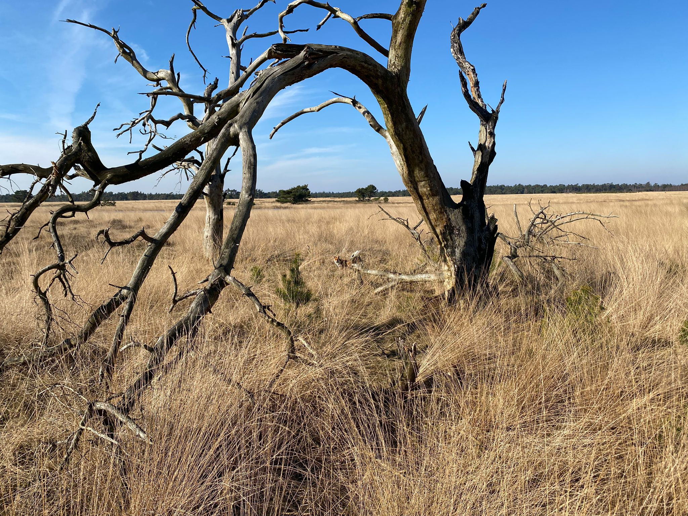
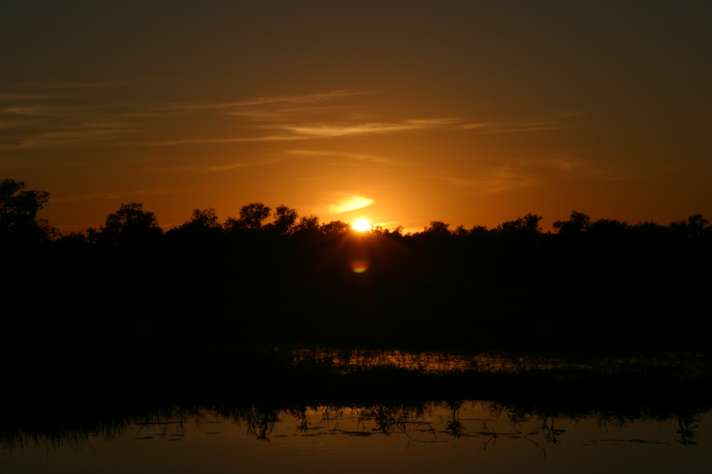

01
Mens
Reflectie, zingeving en handelingsruimte in een complexe werkelijkheid.
Meer over mens →
Reflectie, zingeving en handelingsruimte in een complexe werkelijkheid.
Meer over mens →Samen onderzoeken, verantwoordelijkheid nemen en nieuwe mogelijkheden verkennen.
Meer over team →Werken met de onderstroom, ideologie en het grotere geheel.
Meer over organisatie →Naast mijn praktijk schrijf en onderzoek ik over organisatieverandering, ideologie, technologie, complexiteit en de spanning tussen wat is en wat kan zijn.
Alle artikelen →
Vrijheid en ideologie in de geest van Žižek.
Lees artikel →
On freedom, ideology and democratic change in organizations.
Lees artikel →
Kwalitatief onderzoek naar levenskunstig handelen in een vrijblijvende omgeving.
Lees meer →IN VERSUS is het werk van Evert Nolta. Vanuit begeleidingskunde, organisatieontwikkeling en filosofie onderzoek ik samen met anderen de spanning tussen wat is en wat kan zijn.
Mijn werk beweegt tussen praktijk en onderzoek. Ik ben geïnteresseerd in wat organisaties zeggen dat ze willen veranderen, wat er werkelijk gebeurt en wat mensen daarin tegenhoudt of juist ruimte geeft.
Reflecteren, betekenis geven en handelen.
Onderzoeken wat tussen mensen gebeurt.
Werken met patronen, macht en verandering.
Laten we onderzoeken wat er speelt, wat mogelijk is en welke beweging past.